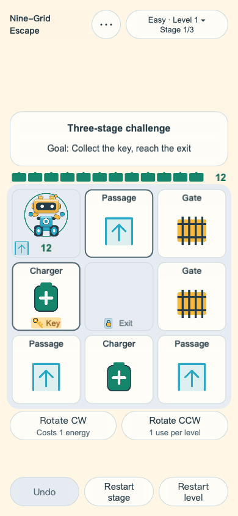
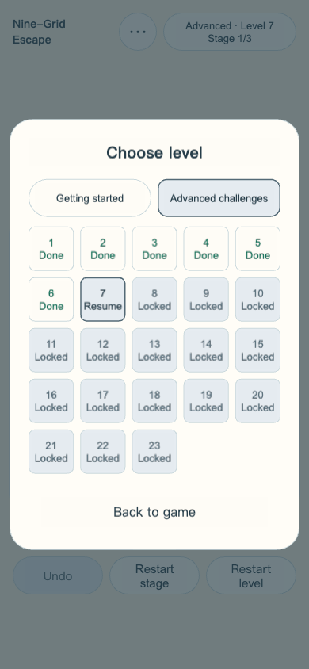
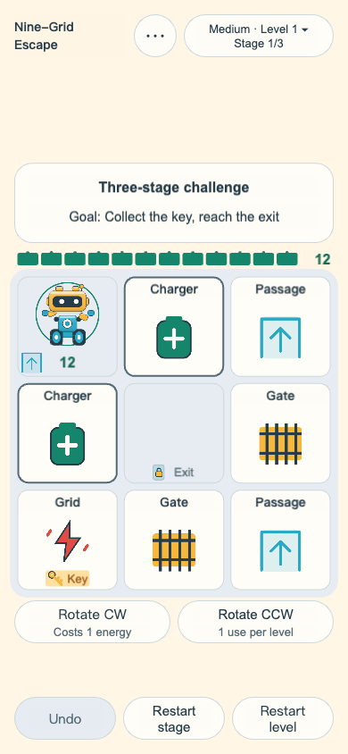
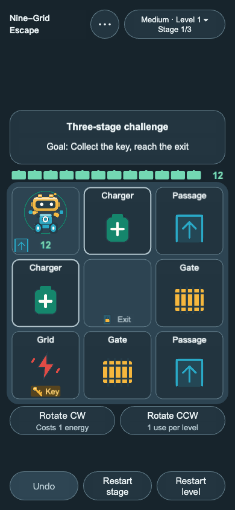
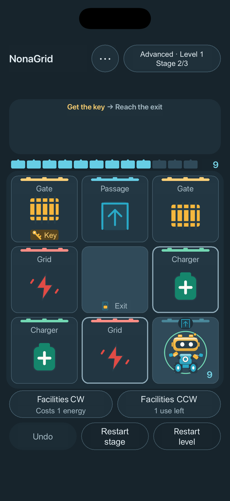
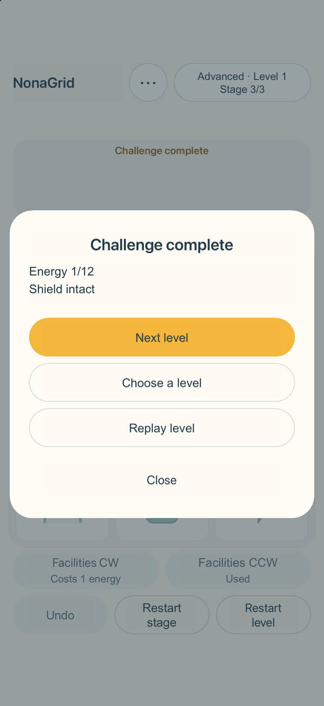

Find your way
Tap a neighbouring cell to move. Collect the key and reach the exit with energy remaining to finish a stage.
A COMPACT LOGIC PUZZLE
Move a little robot through a shifting board. Find the key, keep an eye on your energy, and make every turn count.

6 single-stage Beginner levels and 23 three-stage Advanced challenges: 75 puzzle boards. Four independent gameplay tutorials are counted separately.
Ordinary actions rotate the outer ring clockwise. The robot, key, and exit stay fixed during rotation. Read the board, then choose your next move.
Tap a neighbouring cell to move. Collect the key and reach the exit with energy remaining to finish a stage.
Begin with 12 energy and one shield. Charging cells refill energy and restore your shield when they activate.
Use one free reverse rotation per level. Undo actions within the current stage whenever you need to rethink.
Actual gameplay captured from the Web version. App Store screenshots are prepared separately from iOS.






Solve 6 independent Beginner puzzles at your own pace, then explore 23 three-stage Advanced challenges. Each path starts with an available first level and unlocks in order separately.
Your latest game is saved separately for each level on this device. No account or cloud sync is required.
English, Simplified Chinese, and Traditional Chinese. Light, dark, or system theme, with sound controls in More.
Four directly accessible gameplay tutorials cover the basics, gates and shields, electric grids and shields, and clockwise and counterclockwise rotation. Open Gameplay tutorials at the top during a tutorial, or from More during a normal game. Return to your level with its progress preserved.
The iOS app may show occasional ads after eligible Advanced level completions. The tutorial, Beginner levels, and Advanced level 1 show no ads. Gameplay works offline, and you can continue when an ad is unavailable.
Questions, feedback, or a puzzle that surprised you — we’re happy to hear from you.